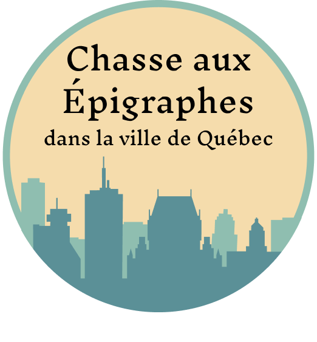

Chasse aux Épigraphes
dans la ville de Québec
ici sera la video
Les 135 plaques «Ici vécut» présentes sur le territoire de la ville de Québec permettent de rappeler de belle façon le souvenir de personnes qui, chacune à leur manière, ont laissé leur marque dans la société québécoise. De ces 135 plaques, 12 ont été sélectionnées pour ce projet.
De manière ludique, venez découvrir des lieux, des hommes et des femmes d’exception. Parcourez les fiches de ces personnages et découvrez leur histoire, écoutez les témoignages des gens qui les ont côtoyés. Laissez-vous raconter des anecdotes savoureuses et des faits réels qui nous éclaire sur un passé pas si lointain…
Participez à la chasse aux épigraphes et courez la chance de gagner un repas pour deux à l’Auberge des Illustres voisins. À vous de jouer!
ici sera l'image de l'auberge